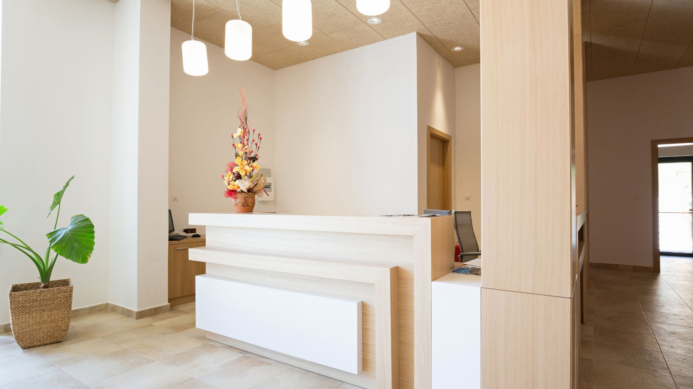

Sua saúde bucal é nossa prioridade
Seu sorriso em boas mãos
Na OdontoShine, unimos cuidado, conforto e qualidade para proporcionar o melhor atendimento para você e sua família.
Devolvendo o seu brilho
Sua saúde bucal é nossa prioridade
Na OdontoShine, unimos cuidado, conforto e qualidade para proporcionar o melhor atendimento para você e sua família.


Sobre nós
A OdontoShine é uma clínica odontológica fictícia criada com o objetivo de oferecer tratamentos de qualidade em um ambiente confortável e acolhedor.
Nossa equipe busca oferecer um atendimento humanizado, respeitando as necessidades de cada paciente.
Nossos diferenciais
Cuidado e atenção em todas as etapas do atendimento.
Equipe preparada para oferecer tratamentos seguros e de qualidade.
Espaço planejado para proporcionar tranquilidade durante suas consultas.
Veja os principais serviços oferecidos pela OdontoShine e encontre o tratamento ideal para o seu sorriso.
Ver serviços